near-30s — 30.016667 s

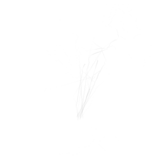

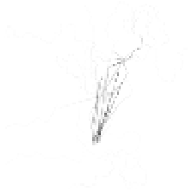

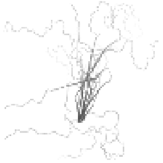

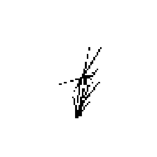

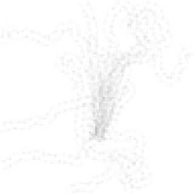

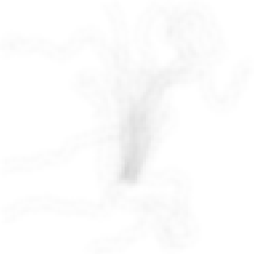

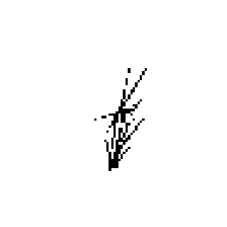

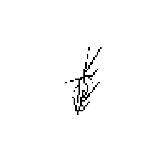

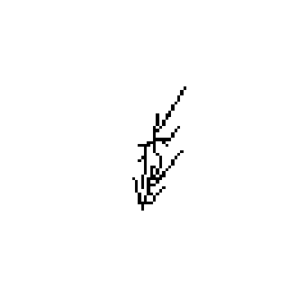


Technical stage maps from one current-G seed 20261005 replay. Every map shares normalized 0–1 world coordinates. Continuous maps use fixed linear grayscale: native chemical 0–8; chemical memory, compaction, and support 0–1. Binary maps are black where occupied. Each map is nearest-sampled for display; exact arrays and statistics are in the evidence data.









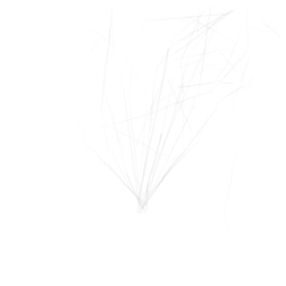
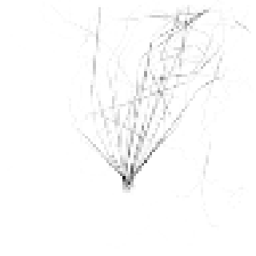
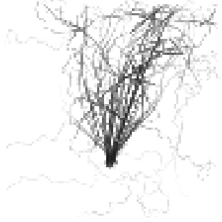
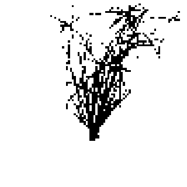
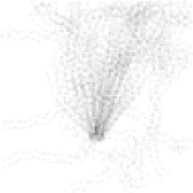
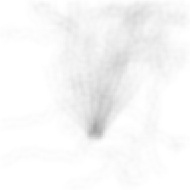

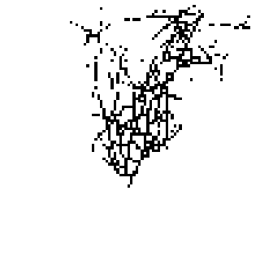

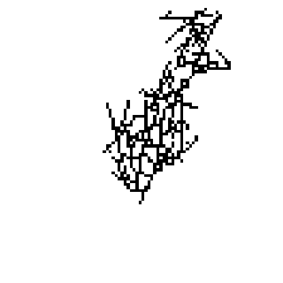
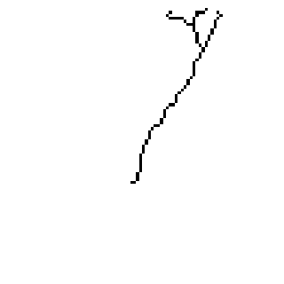
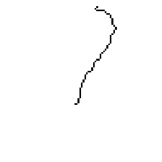
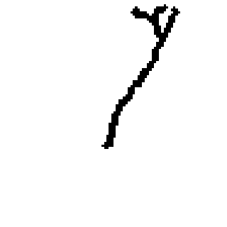


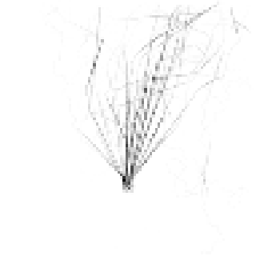
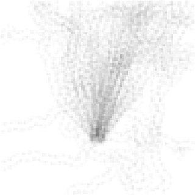
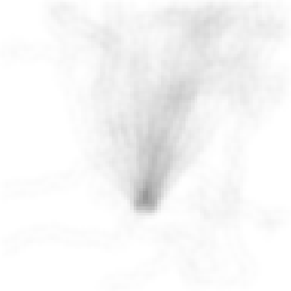
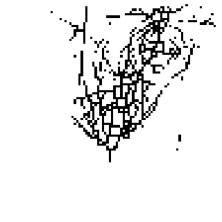
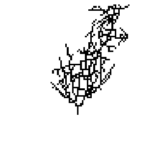

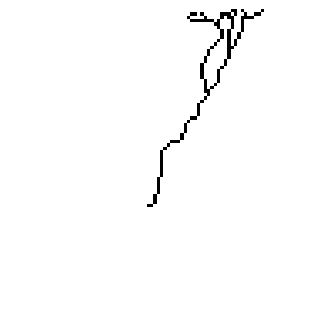
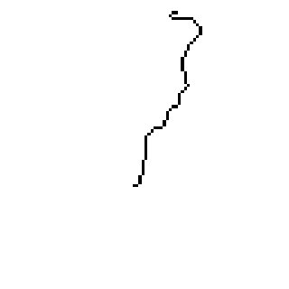


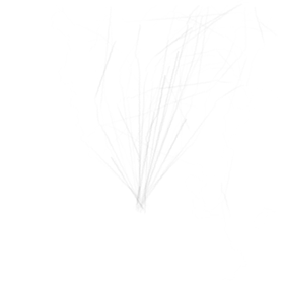
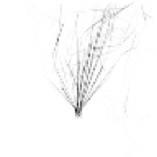
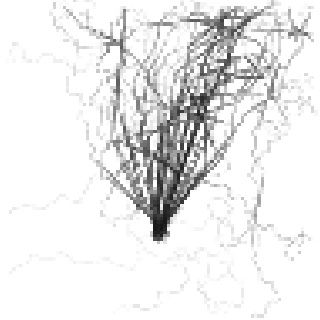
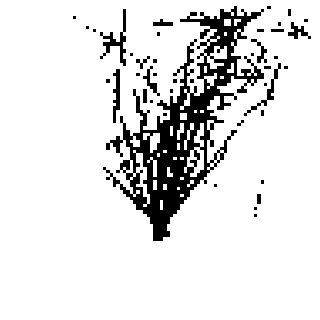
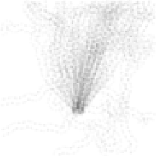
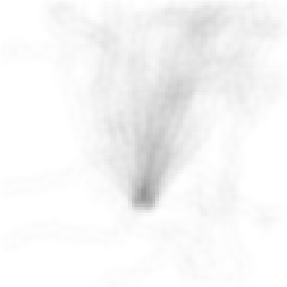
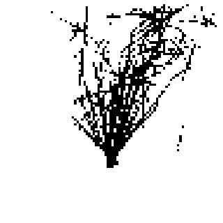
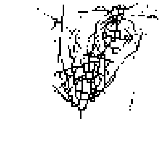

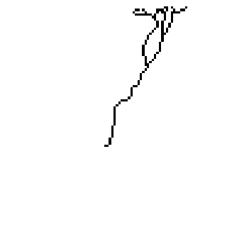
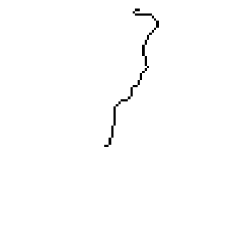


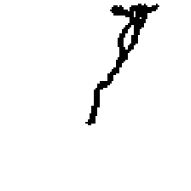
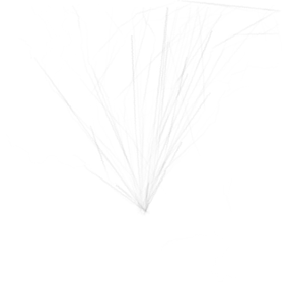
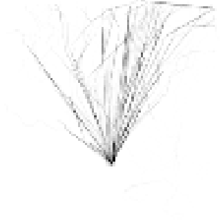
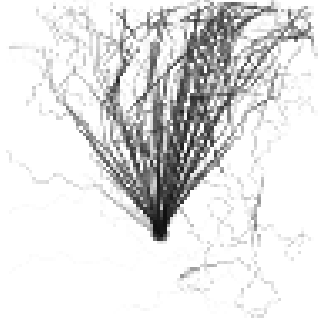

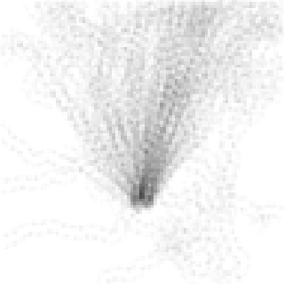
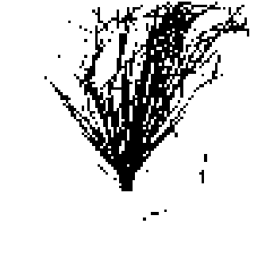
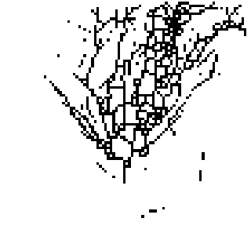
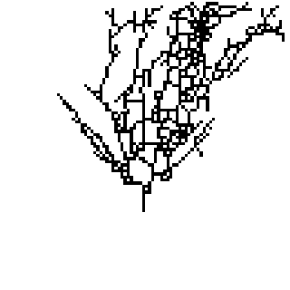
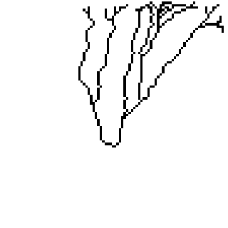
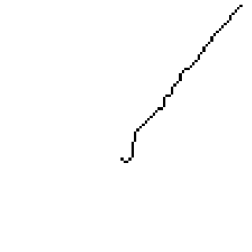
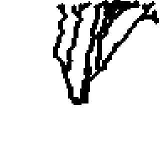

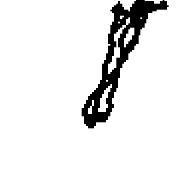